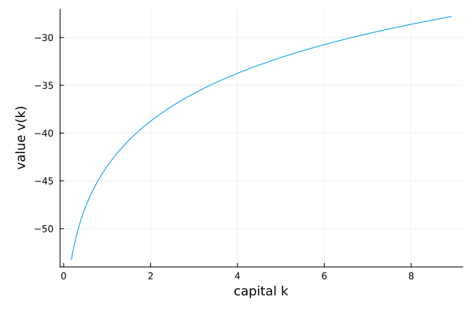
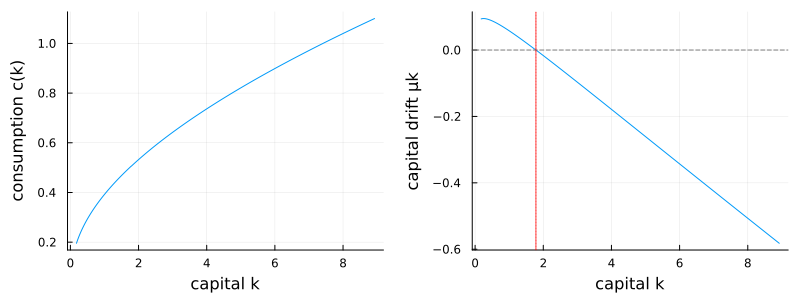

Neoclassical growth model
The deterministic neoclassical (Ramsey–Cass–Koopmans) growth model is the gentlest introduction: one state variable, one value function, and a closed-form steady state to check the solution against. A representative household chooses consumption to solve
\[\max_{c} \int_0^\infty e^{-\rho t}\, \frac{c^{1-\gamma}}{1-\gamma}\, dt \qquad \text{subject to} \qquad \dot k = A k^\alpha - \delta k - c,\]
and the value function $v(k)$ solves the Hamilton–Jacobi–Bellman equation
\[\rho\, v(k) = \max_{c}\; \frac{c^{1-\gamma}}{1-\gamma} + v'(k)\,\bigl(A k^\alpha - \delta k - c\bigr),\]
with first-order condition $c = v'(k)^{-1/\gamma}$.
This is the same model solved step by step in Getting started. Here it is packaged the way the rest of the examples are — parameters in a struct, the equation as a callable on it — and the solution is plotted against the closed-form steady state.
The model
The parameters live in a struct:
using EconPDEs, Plots
Base.@kwdef struct NeoclassicalGrowthModel
A::Float64 = 0.5 # productivity
α::Float64 = 0.3 # capital share
δ::Float64 = 0.05 # depreciation
ρ::Float64 = 0.05 # discount rate
γ::Float64 = 2.0 # relative risk aversion
endMain.NeoclassicalGrowthModelThe state space
We build the grid and the initial guess first, because they fix the names used everywhere else. The grid is a NamedTuple whose key is the state variable (k); the guess is a NamedTuple whose key is the unknown function (v), holding one starting value at each grid point. These names are what reappear inside the equation below — e.g. vk_up will be the forward finite difference of v in k.
We center the grid on the closed-form steady state $\bar k$ (where $\alpha A \bar k^{\alpha-1} = \rho + \delta$) and start from the value of consuming gross output forever.
m = NeoclassicalGrowthModel()
(; A, α, δ, ρ, γ) = m
k̄ = (α * A / (ρ + δ))^(1 / (1 - α))
stategrid = (; k = range(0.1 * k̄, 5 * k̄, length = 1000))
guess = (; v = [(A * k^α)^(1 - γ) / (1 - γ) / ρ for k in stategrid[:k]])(v = [-67.07988492029078, -66.12315549174167, -65.22287930123237, -64.37341812114249, -63.569908124311645, -62.808126815964286, -62.084387068153376, -61.395451937439574, -60.73846559300686, -60.110896857919776 … -20.799682661358432, -20.793510878722316, -20.787347023970753, -20.781191079104264, -20.77504302618197, -20.768902847321304, -20.76277052469779, -20.756646040544776, -20.750529377153217, -20.7444205168714],)The equation
We now write the function encoding the HJB equation. Following the package convention, it takes the current state (a grid point) and u — the local bundle holding each unknown and its finite-difference derivatives there (here v, vk_up, vk_down) — and returns the time derivative vt of each unknown.
The capital drift $\dot k$ can point either way, so the first derivative is upwinded: forward (vk_up) where the implied drift is positive, backward (vk_down) where it is negative, and the consumption that sets the drift to zero at the steady state in between. A second NamedTuple saves consumption c and the drift μk on the grid.
The return value follows the package's sign convention: vt = -(RHS - ρv) is the time derivative that makes the time-dependent equation $\rho v = \text{RHS} + \partial_t v$ hold, and pdesolve integrates this false transient until it stops moving — with this sign the iteration converges to the stationary solution; with the opposite sign it diverges.
function (m::NeoclassicalGrowthModel)(state::NamedTuple, u::NamedTuple)
(; A, α, δ, ρ, γ) = m
(; k) = state
(; v, vk_up, vk_down) = u
c_up = vk_up >= 0 ? min(vk_up^(-1 / γ), 10 * A * k^α) : 10 * A * k^α
μk_up = A * k^α - δ * k - c_up
if μk_up > 0
c, vk, μk = c_up, vk_up, μk_up
else
c_down = vk_down >= 0 ? min(vk_down^(-1 / γ), 10 * A * k^α) : 10 * A * k^α
μk_down = A * k^α - δ * k - c_down
if μk_down < 0
c, vk, μk = c_down, vk_down, μk_down
else
μk = 0.0
c = A * k^α - δ * k
vk = c^(-γ)
end
end
vt = -(c^(1 - γ) / (1 - γ) + μk * vk - ρ * v)
return (; vt), (; c, μk)
endWith the equation, grid, and guess in hand, pdesolve solves the stationary system:
result = pdesolve(m, stategrid, guess)EconPDEResult
zero: v (1000)
saved: v, c, μk
residual_norm: 4.0488251383966505e-11The solution
The value function is increasing and concave in capital:
ks = stategrid[:k]
plot(ks, result.zero[:v]; xlabel = "capital k", ylabel = "value v(k)", legend = false)
Consumption rises with capital (left). The capital drift $\mu_k$ (right) is positive below the steady state and negative above it, crossing zero exactly at $\bar k$ — the saddle-path-stable steady state the economy is drawn toward.
p1 = plot(ks, result.saved[:c]; xlabel = "capital k", ylabel = "consumption c(k)", legend = false)
p2 = plot(ks, result.saved[:μk]; xlabel = "capital k", ylabel = "capital drift μk", legend = false)
hline!(p2, [0.0]; color = :gray, linestyle = :dash)
vline!(p2, [k̄]; color = :red, linestyle = :dot)
plot(p1, p2; layout = (1, 2), size = (800, 300))
This page was generated using Literate.jl.